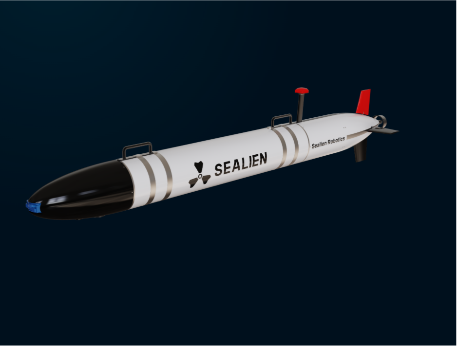
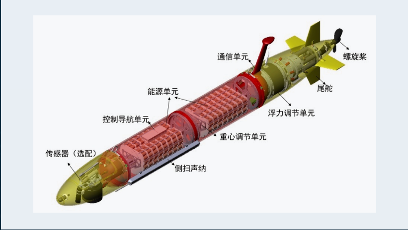
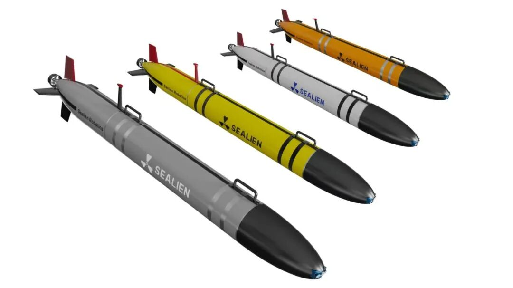
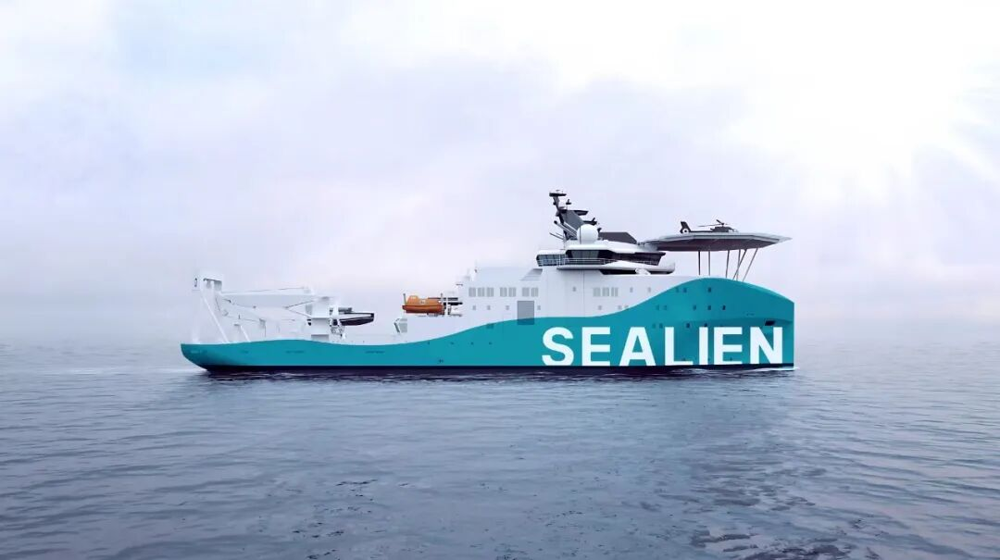
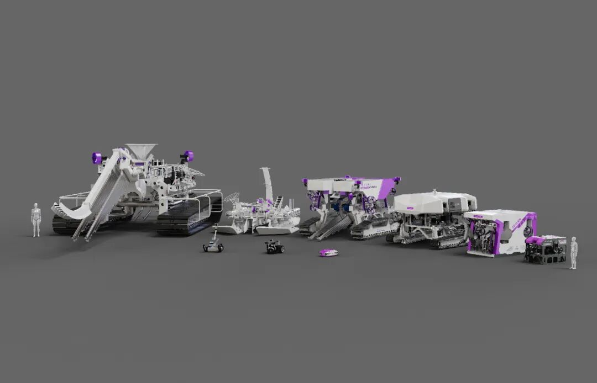
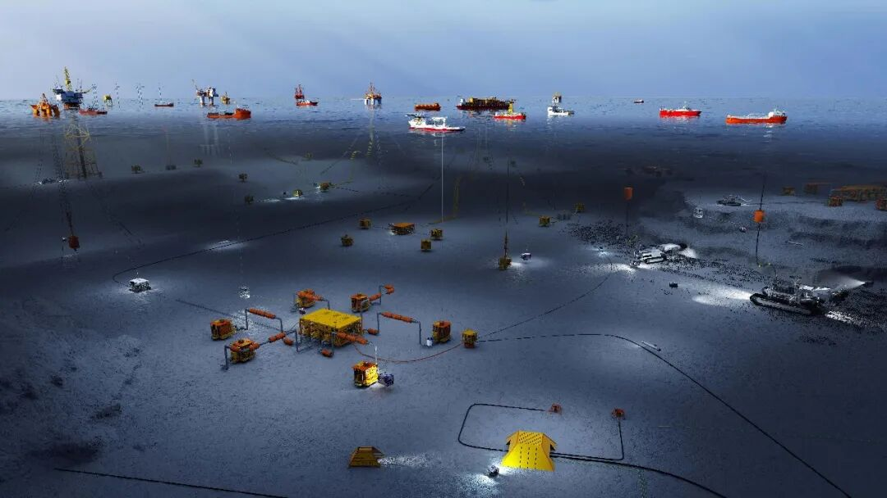

自主任务执行
支持预规划航线、地形跟随与自适应任务流程，适用于长距离、长时间的海底自主作业。
产品概述
SEALIEN AUV 是一套模块化自主水下航行器平台，面向海洋油气、海上风电、海洋科考、水深测绘与环境监测等长航程海底任务。
平台具备可配置载荷舱、精密导航与面向任务的自主控制能力，可在复杂水下环境中提升数据采集效率和作业稳定性。

核心功能
支持预规划航线、地形跟随与自适应任务流程，适用于长距离、长时间的海底自主作业。
可根据任务需求配置声呐、相机、环境传感器与科学载荷，支持不同项目的快速适配。
集成 INS、DVL、GNSS 水面更新、声学定位与深度传感能力，提升水下定位可靠性。
围绕母船协同、快速布放回收与复杂海况工程作业需求设计，适配多类海上项目流程。
支持水深测量、管线巡检、海底测绘、环境监测与科学采样等高价值数据工作流。

系统架构
能源、控制、导航与浮力调节模块采用面向升级和维护的组织方式，便于集成测绘传感器、视频相机、环境监测载荷和客户自定义任务载荷。
技术参数
以下为基于现有资料整理的参考配置范围，最终参数需根据项目载荷、航程、作业深度与部署方式确认。
产品亮点

不同外观、能源与载荷配置可覆盖多类任务剖面，并支持客户项目定制需求。

围绕海上支持船、任务控制和布放回收流程设计，提升远海作业效率。

可与更完整的海工机器人装备组合协同，用于巡检、测绘与海底工程项目。
任务环境
应用场景

用于海底管线巡检、海底设施周边测绘和复杂海工基础设施的数据采集。
支持海缆路由调查、风机基础周边海床检测及长期环境监测任务。
可集成 CTD、化学传感器、相机与客户科研载荷，支持多学科海洋观测。
适用于多波束测深、侧扫声呐、地形跟随、路由调查与海底目标识别。